第12章：苹果应用开发生态系统¶
在你继续构建本书的另外两个应用程序之前，这里还有一个概述章节。
在构建HIITFit的时候，你学到了很多关于Xcode、Swift和SwiftUI的细节。在上一章中，你得到了一种"阳台视角"，即各种属性封装器如何帮助你管理应用程序的数据状态。本章提供了整个苹果应用开发生态系统的鸟瞰图，解开了你在iOS开发者聚在一起聊天时可能听到的许多术语的神秘感。你将开始建立自己的心智模型，了解所有部分是如何结合在一起的，为苹果每年增加的所有新东西创建自己的框架。
SwiftUI的简要历史¶
你一直在使用SwiftUI构建HIITFit，但这只是苹果公司最新的应用开发范式。
苹果在2019年6月的全球开发者大会上宣布了SwiftUI。SwiftUI建立在苹果于2014年6月宣布的Swift编程语言之上。SwiftUI是一种特定领域语言(DSL)，使用这些新的Swift功能用Swift编写。
- 属性封装器，如
@State来监控属性的状态。 - 结果生成器，如
@ViewBuilder来创建视图层次结构。 - 不透明的结果类型，如
some View以避免明确地写出视图层次。
与Objective-C相比，Swift可以创建更快、更安全的应用程序，而且更多的是面向协议而不是面向对象。第15章"结构、类和协议"解释了类的继承和协议的区别。
到2018年3月，Redmonk编程语言排名（bit.ly/3rsZmwq）将Swift和Objective-C并列排在第十位。
Objective-C是在1997年苹果收购NeXT时进入苹果历史的，这也让史蒂夫-乔布斯回到了苹果。乔布斯在1985年与首席执行官约翰-斯库利（John Sculley）就Macintosh电脑的未来进行的董事会斗争中失败后，从苹果公司辞职了。乔布斯和其他五位前苹果公司高管随后成立了NeXT电脑公司。

用Objective-C编写的NeXTSTEP操作系统构成了2001年发布的Mac OS X的基础。苹果为开发者提供了Cocoa API，以便为OS X创建应用程序。Cocoa由三个反映Model-View-Controller原则的框架组成：Core Data、AppKit和Foundation。AppKit和Foundation中的NS前缀是对其NeXTSTEP遗产的认可。
苹果在2007年发布了iPhone，并在2008年发布了iPhone SDK（软件开发工具包）。这包括Cocoa Touch，UIKit取代了AppKit。现在被称为iOS SDK，它帮助你创建的应用程序的外观和行为符合用户的期望。
有趣的事实¶
- 第一台万维网服务器是一台
NeXT电脑，id软件公司在运行NeXT操作系统NeXTSTEP的机器上开发了视频游戏《毁灭战士》和《雷神》。1996年，NeXT软件公司发布了WebObjects，一个用于网络应用程序开发的框架。苹果公司使用WebObjects建立并运行苹果商店、MobileMe服务和iTunes商店。 Cocoa != Java for kids。在乔布斯回到苹果公司之前，苹果先进技术集团创建了KidSim，一个教孩子们编程的应用程序。KidSim程序被嵌入到网页中运行，因此他们将该应用程序重新命名并注册为Cocoa--"儿童的Java"。Cocoa程序是1997年被砍掉的众多程序之一，苹果在OS X API中重新使用了这个名字，以避免注册新商标的延误。- 在开发
iPhone时，史蒂夫-乔布斯不希望非苹果开发者建立原生iPhone应用程序。他们应该满足于为Safari制作网络应用。这一立场因开发者的反响而改变，iPhone SDK于2008年3月6日发布。
SwiftUI vs. UIKit¶
虽然你只用了SwiftUI来创建HIITFit，但UIKit有很多资源可以帮助你为你的应用添加功能，或者微调它的外观和功能。
最受欢迎的情节¶
正如你在本书第3节所看到的，"SwiftUI vs. UIKit"(bit.ly/2PGuNFy)是raywenderlich.com上最受欢迎的免费节目。由Ray亲自主讲，值得一看，但这里有一个TL;DW摘要。
Note
和本网站的很多内容一样，这一集是针对想在iOS应用开发公司工作的人。如果这不是你，请跳到下一节。另外，这是2019年的一集。有一个较新的，但它还没有时间积累浏览量来超越原来的。
使用UIKit的开发者仍然多于SwiftUI的三个原因：
SwiftUI只适用于iOS 13或更高版本。一些公司仍然需要支持iOS 12或更早的版本，所以他们还不能切换到SwiftUI。SwiftUI仍然没有UIKit那么成熟。苹果在2008年发布了UIKit，它建立在来自NeXTSTEP的macOS AppKit之上，所以有很多时间来把事情做好。SwiftUI仍然有缺失的功能或粗糙的边缘，所以一些公司希望给SwiftUI多一点时间来成熟。- 许多公司已经用
UIKit编写了他们的应用程序，在这个时候用SwiftUI重写整个东西简直是太累了，所以很多旧的UIKit遗留代码会保留下来。

问：你应该学习哪个？SwiftUI还是UIKit？
答：如果你真的想成为一名专业的iOS开发者，我们的建议是同时学习SwiftUI和UIKit。如果你最终在一家已经发布了iOS应用的公司工作，很有可能是用UIKit做的。因此，如果你想在这些公司中工作，对你来说，能够使用这些代码库也很重要。我们创建了一个特殊的可选学习路径，叫做"iOS User Interfaces with UIKit"(bit.ly/2OaK4ye)。如果你需要为你的工作学习UIKit开发，你肯定应该去看看。但如果你只关心SwiftUI，你可以安全地跳过它。
这并不是全有或全无：你有可能用SwiftUI制作你的应用程序的某一部分，而用UIKit制作其他部分。随着公司开始从UIKit过渡到SwiftUI，我们预计在未来几年会看到许多代码库同时混合了SwiftUI和UIKit的代码。
谢谢你，Ray! 这是进入下一节的完美过渡...
整合新的和旧的¶
苹果总是为开发者提供支持，让他们过渡到新事物。Carbon API使开发者能够将"经典"的Mac OS应用移植到OS X。桥接头文件使开发者能够在Swift应用中使用Objective-C代码，反之亦然。
开发人员仍然可以在没有Swift的情况下创建Objective-C应用，在没有SwiftUI的情况下创建Swift应用。UIKit比SwiftUI有更多的功能，对用户界面元素的外观和操作提供了更多的控制。
但是没有FOMO（害怕错过）! 你可以在你的SwiftUI应用程序中使用UIKit视图。
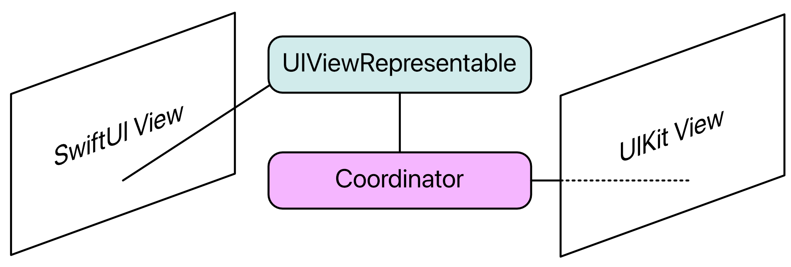
你将在第17章"与UIKit交互"中使用新的PHPickerViewController，在第21章"愉悦的用户体验--最后的修饰"中使用UIActivityViewController。

在第22章"列表和导航"中，你将用UINavigationBarAppearance和UISegmentedControl.appearance()来控制导航条和分段控件的外观。
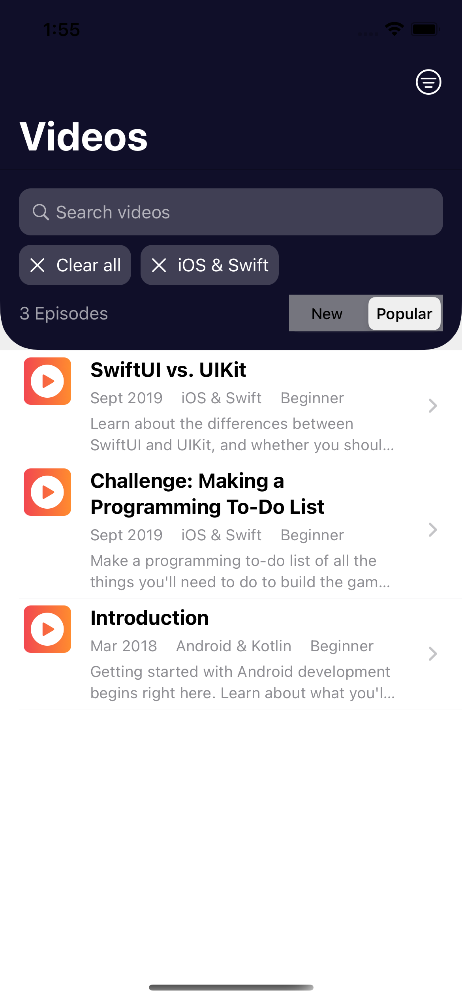
使用UIColor来访问系统和UI元素的颜色也非常容易，你可以从UIImage创建一个Image视图。
Apple Developer¶
尽管史蒂夫-乔布斯最初的意图是，苹果希望每个人都能成为苹果开发者。你的需求和兴趣可能被其他几个人或很多人分享。但也许不是专业的iOS开发者。如果你创建了一个你需要或想要的应用程序，它也会成为其他这些人可用的。如果你的应用程序使用一些只在最新的苹果小工具上工作的技术，那就更好了，所以他们必须升级才能使用你的应用程序。;]
所以苹果公司在developer.apple.com提供了大量的资源来帮助你成为一个开发者并保持最新的状态。
- 文档在apple.co/3v9YVcL和Xcode的
Help ▸ Developer Documentation(Shift-Command-0) - 人机界面指南在apple.co/3cgQJPk 和
Xcode的Help ▸ Human Interface Guidelines(Shift-Command-H)
WWDC¶
每年六月，苹果公司都会举行为期五天的全球开发者大会。第一天的主题演讲展示了iOS、macOS和所有其他操作系统的新版本的所有功能计划。这些功能在今年晚些时候推出，大约在9月或10月。
对于iOS开发者来说，更重要的演讲是第2天的"平台状况"，在那里你可以第一次看到用于将这些新功能添加到你的应用程序的API，以及对Xcode等开发工具的改进。在这一周的其余时间里，你可以观看介绍和深入研究新功能的演讲。
苹果公司提供了多平台的苹果开发者应用程序（apple.co/3eoIfs1），你可以在这里查看WWDC视频，并将你的最爱加入书签或下载。
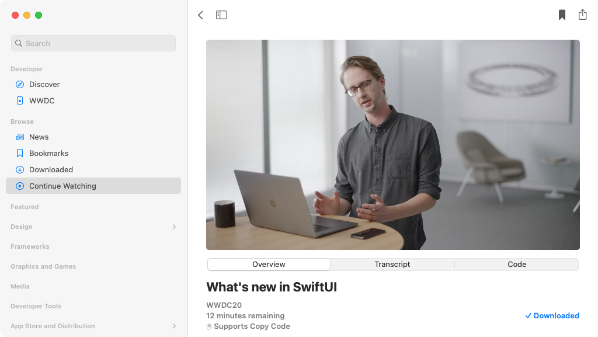
如果你是苹果开发者计划的付费会员，你可以下载Xcode和操作系统的测试版本，并立即开始探索所有的新事物。你的目标是在新的或现有的应用程序中包含新的功能，所有这些都将在新的iOS推出时进入App Store。
有一点需要注意的是。WWDC的演讲者使用了一个特殊的内部版本的Xcode。它与你可以下载的Xcode测试版不同，所以你在演讲中看到的所有东西在测试版1中并不适用。或者测试版2。或者永远不会。当苹果发布最终版本时，API的细节经常发生变化，一些承诺的功能会悄然消失。
Platforms¶
使用SwiftUI来构建新的iOS应用程序，使其更容易在苹果的其他平台上创建类似的应用程序：macOS、watchOS和tvOS。这并不是说你的iOS应用会在另一个平台上"正常运行"。它可能不会。
你可以在其他平台上使用许多SwiftUI视图，但它们的外观或功能可能会有一些不同。而且其他平台的视图在iOS上是不存在的。另外，你的iOS应用的一些功能在tvOS这样的固定平台或watchOS这样的小屏幕上是没有意义的。
无论你的目标是哪个平台，你组装SwiftUI应用的方式都是一样的。苹果是这样表述的。只需学习一次，就能在任何地方应用。
Mac Catalyst是苹果公司的程序，使其更容易从iPad应用程序创建一个本地Mac应用程序。你在iPad应用程序的项目设置中打开Mac Catalyst，然后修改用户界面，使之更像Mac。一些iPad的UI元素不太适合Mac的用户体验，而一些iPad框架在macOS中是不可用的。你的代码使用这个编译器指令来控制包括什么。
#if targetEnvironment(macCatalyst)
...
#endif
请看苹果公司的Mac Catalyst教程（apple.co/3qPaen7）。要想更深入地了解，请浏览我们的《Catalyst by Tutorials》）。
Note
Apple Silicon怎么样？这是苹果公司设计和制造自己的Mac处理器的计划。自1984年推出以来，Mac已经使用了摩托罗拉68000、PowerPC和英特尔CPU芯片。苹果M1芯片将苹果的新CPU与它的新GPU、神经引擎等整合在一起。你可以在Apple Silicon``Mac上安装Rosetta 2，运行为英特尔Mac编写的应用程序。
Frameworks¶
SDK有很多框架，而且苹果每年都会增加新的框架。每个应用程序需要的都是原始Cocoa的现代化版本。
Core Data或其他一些数据库技术用于数据持久性。- 用于用户界面的
SwiftUI和/或UIKit。 - 处理和协调数据和视图的基础。
Note
Core Data是一个庞大的话题，如果你想了解更多，我们有一本书《核心数据教程》（bit.ly/39lo2k3）和视频课程《初级核心数据》（bit.ly/2OGjuwG）和《中级核心数据》（bit.ly/3bE2H6z）来帮助你前进。
本书中的应用程序都使用了这些框架。
在HIITFit和RWFreeView中，AVKit用于VideoPlayer中的AVPlayer：

在第17章"与UIKit接口"中，PhotosUI用于PHPickerViewController：

在第17章的挑战中，PencilKit为PKCanvasView：
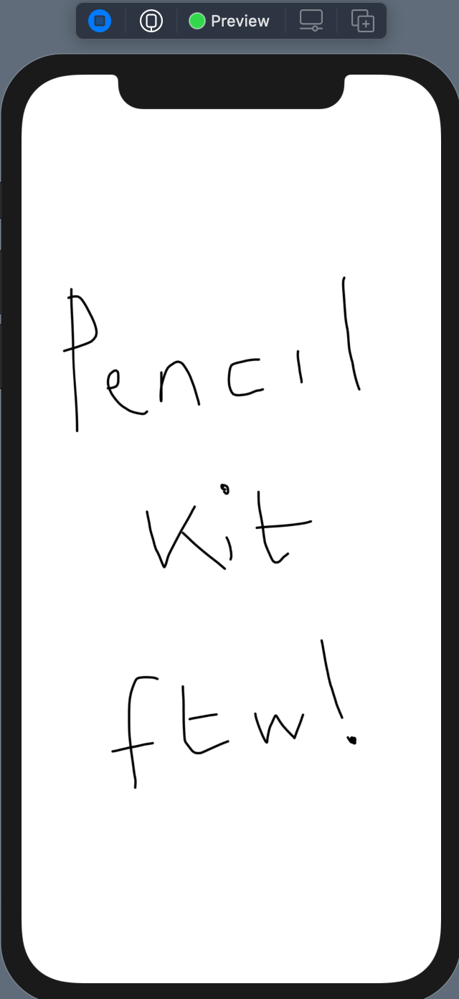
在第26章"Widgets"中，WidgetKit可以创建Widge`ts：

接下来的这两个框架很重要，但超出了本书的范围：
Accessibility：关注可访问性是增加应用程序受众的最简单方法之一。参见《SwiftUI教程》第12章"Accessibility"（bit.ly/32oFTCs）和我们的三部分教程《SwiftUI中的iOS可访问性教程》（从bit.ly/2WYD9sI开始）。Combine：你在第6章"为你的应用程序添加功能"中使用了一个Timer发布器，但关于Combine还有很多东西需要学习。这个新的框架是对iOS应用程序处理并发的方式的一个重大改变。见Combine。Swift中的异步编程（bit.ly/3l7VqPq）和视频课程Combine在iOS中的响应式编程（bit.ly/3rGsL6D）。
你可能想要探索其他一些框架。
MapKit为你的应用程序添加地图、用户位置、路线或覆盖视图：

WatchKit为Apple Watch创建应用程序。请关注我们的《watchOS教程》一书中的更新。
ARKit用于增强现实。请看苹果增强现实教程（bit.ly/3tabJxZ）和我们的视频课程"初学ARKit"（bit.ly/3qJ2a7n）。为苹果的混合现实头盔做好准备，预计在2022年中期（bit.ly/38rEE8K）。
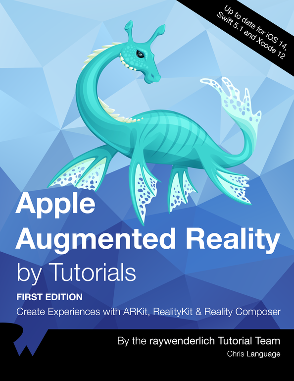
在apple.co/3rwyxrj探索所有技术：
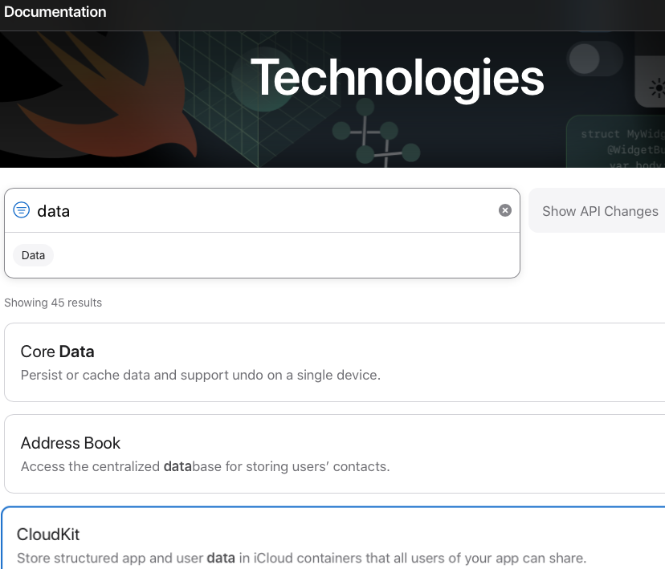
而且你可以在苹果开发者应用程序中浏览特定框架的视频：

能力¶
许多框架都是为了给你的应用程序添加特殊功能。苹果将这些功能称为能力。
➤ 要查看能力列表，请打开您的一个Xcode项目或创建一个新项目。在项目页面上，选择一个目标，单击签名和能力选项卡，然后单击+能力：

你将在第26章"小部件"中使用应用程序组在你的应用程序和其小部件之间共享数据。
如果你不在苹果开发者计划中，你只能将这些功能中的一部分添加到你的应用程序中。它们列在本页面的第三栏。[apple.co/3rOhlNW]（https://developer.apple.com/support/app-capabilities/）。

➤ 向下滚动页面以查看如果加入苹果开发者计划可以添加的所有功能。
开发者计划¶
那么，什么是三种类型的开发者？
苹果开发者：
- 没有年费。
- 可以访问文档和视频。
- 免费提供在您的设备上安装
Xcode项目。Xcode创建了一个供应配置文件，让您安装一些应用程序。配置文件在七天后过期，因此这些应用程序将停止在您的设备上运行。只需删除配置文件并重新安装您的应用程序。
苹果开发者计划（apple.co/3emR2ur）。
- 年费大约相当于你的货币
99美元。 - 可以使用测试版操作系统和应用程序。
- 用于管理你的证书、标识符和配置文件的网络界面。
- 访问
App Store Connect。通过TestFlight向测试人员分发您的测试版应用程序；向App Store提交您的应用程序。 - 在虚拟
WWDC期间：你可以申请实验室预约或向苹果工程师发布有关WWDC内容的论坛问题。当亲身参与的WWDC恢复时，你可以注册参加门票抽奖。
如果你在App Store中有应用，但你没有更新你的会员资格怎么办？这里是苹果的答案：
过期的会员资格：如果您的Apple Developer Program会员资格过期，您的应用程序将不再可供下载，您将无法提交新的应用程序或更新。您将失去对预发布软件、证书、标识符和配置文件以及技术支持事件的访问。
苹果企业计划是为那些只想向员工分发应用程序的公司准备的。费用为每年299美元或同等金额。企业应用程序不提交给App Store，因此不必遵守苹果的要求。但有很多法律要求（apple.co/3coUHVU），使用TestFlight可能更容易。
应用程序分发¶
让你的应用程序进入App Store的实际程序每年都有一些变化。苹果公司的文档可能很混乱。
请查看我们的《iOS应用发布与最佳实践》（bit.ly/3al3Hez）或视频课程《发布到App Store》（bit.ly/3tckW8Z）。
内务管理和故障排除¶
希望你在创建HIITFit时没有遇到任何问题。Xcode的错误和警告信息通常是有帮助的，但有时它们就是错误的。一开始，你不能确定这是否是你需要解决的问题，但是，随着你经验的增加，你会对Xcode的错误或困惑有一个感觉。它确实发生了。当这种情况发生在iOS开发者身上时，他们做的第一件事就是清理构建文件夹。继续阅读以了解这其中的内容。
DerivedData/Build¶
Xcode在~/Library/Developer/Xcode中维护了很多文件。特别值得注意的是DerivedData，在这里Xcode为你曾经创建或打开的每个项目创建了一个文件夹。这是Xcode存储中间的构建结果、索引和日志的地方。
找到您项目的衍生数据文件夹的最简单方法是使用新的Xcode菜单项Reveal Build Products Folder。
➤ 打开您的一个Xcode项目或创建一个新项目。如果是新的，按Command-B或刷新预览来构建它。然后选择Product ▸ Reveal Build Products Folder：
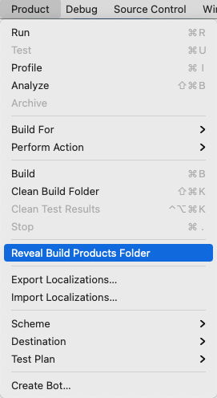
➤ 在Finder列视图中，向左滚动以看到DerivedData中项目的文件夹：
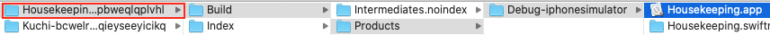
文件夹名称以你的项目名称开头，后面是一个哈希值。
➤ 选择此文件夹，然后以列表形式查看，并打开Build文件夹：

➤ 打开Intermediates.noindex，通过其.build、Debug和.build文件夹向下钻，找到Objects-normal/x86_64，或者，对于你们这些幸运的M1所有者，找到arm64：

➤ 双击x86_64或arm64来打开它，然后对修改日期进行排序：

➤ 注意ContentView.o的位置和时间戳。
➤ 在Xcode中，对ContentView.swift进行修改，按Command-B键重建，然后在x86_64或arm64中查看ContentView.o：
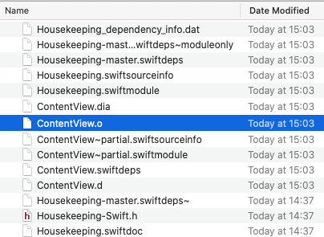
Xcode更新了大约一半的文件，包括大部分的ContentView文件。Xcode重新编译了ContentView.swift，但没有编译HousekeepingApp.swift。它知道（大多数时候）哪些文件已经改变，不会重新编译没有改变的文件。但是有时候，这个系统会出问题，Xcode会抱怨那些正确的代码，或者无缘无故出现奇怪的错误。那么就需要清理构建文件夹了。
➤ 在Xcode中，按Shift-Command-K或从Xcode菜单中选择Product ▸ Clean Build Folder：

这个命令删除了项目Build文件夹中的所有内容，给你一个全新的开始。
DerivedData/Index¶
Index文件夹存储了Xcode用于搜索、Open Quickly和重构的数据。同样，有时索引会被混淆，导致奇怪的Xcode行为。没有菜单命令来删除索引。你只需要删除整个派生数据文件夹并让Xcode重新创建它。
➤ 按Command-up-arrow键回到你的派生数据文件夹，或者在路径栏中双击其名称：
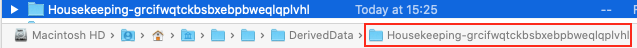
➤ 在Finder中，按Command-delete删除整个文件夹，然后在Xcode中，按Command-B重新建立：
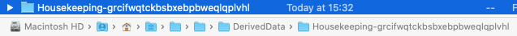
Xcode创建了一个新的派生数据文件夹，名称相同。
当Xcode表现得很奇怪的时候¶
Xcode是一个非常复杂的应用程序，有时它需要一个提示或更强大的东西来"清除它的头脑"。
以下是大多数开发者所遵循的干预的升级级别：
- 清理建设文件夹。
- 删除项目的
DerivedData文件夹。 - 重新启动
Xcode。 - 重新启动
Mac。
很奇怪但却是事实。删除早期版本的Xcode可以解决一些奇怪的问题，比如在编辑器中没有颜色编码或Command-/不工作。
重新获得磁盘空间¶
奇怪的Xcode行为并不是删除衍生数据文件夹的唯一原因。在你完成一个项目的工作后很久--甚至删除它--它的派生数据文件夹仍然存在，占用磁盘空间。许多开发者每隔一个月左右就会例行删除整个DerivedData文件夹，回收数千兆字节的空间。如果你的磁盘空间不足，它肯定是你应该首先查看的地方。
Command-delete只是把它移到垃圾箱，在那里它仍然会占用空间。要想真正删除这个文件夹，你可以在终端输入这个命令：
rm -rf ~/Library/Developer/Xcode/DerivedData/
或者，如果你正在运行Big Sur，你可以打开垃圾箱，有选择地删除该文件夹。但Big Sur的存储管理提供了一个更简单的方法来清除更多的空间。
➤ 在苹果菜单中，选择"关于此Mac"，然后点击"存储"。然后点击管理并选择开发者。选择Xcode Caches和Project Build Data and Indexes，然后单击Delete...
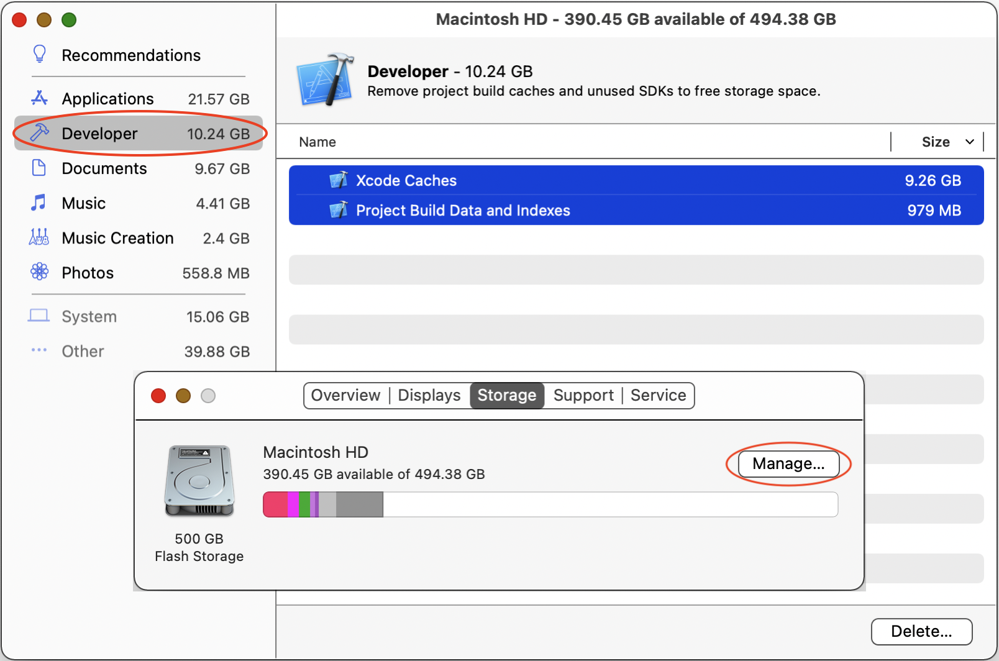
向社区寻求帮助¶
SwiftUI的错误信息可能很神秘。如果你收到一条错误信息，却不知道它要你做什么，请选择整个信息，然后从右键菜单中选择"用谷歌搜索"。
许多搜索结果将是Stack Overflow或苹果开发者论坛的问题，希望能有答案。
还可以查看raywenderlich.com论坛（bit.ly/3rHLXRj）和Discord（bit.ly/3lajOjf）。
raywenderlich.com团队和成员是一个了不起的资源，但也有一个庞大的全球iOS开发者社区。他们几乎都很友好，很热情，而且对他们的时间和专业知识很慷慨。
加入这个社区的一个简单途径是在Twitter上关注@codeine_coding并参加他每月的#iOSDevHappyHour活动：

关键点¶
SwiftUI是一种建立在Swift基础上的特定领域语言，是一种比Objective-C更快、更安全的编程语言。SwiftUI vs. UIKit是raywenderlich.com上最受欢迎的免费节目，回答了一个大问题。你应该学习哪个？- 你可以在你的
SwiftUI应用程序中使用UIKit视图和视图控制器。 - 苹果公司提供了大量的资源来帮助你成为一名开发者并保持最新：在网站和
Xcode中可以找到文档和人机界面指南。使用苹果开发者应用程序来观看WWDC视频。 SDK有很多框架，许多框架用于向你的应用程序添加特殊功能（能力）。- 苹果开发者计划的成员可以添加所有的功能，还可以提前获得测试版操作系统和开发者工具。而且只有会员才能充分参与
WWDC。 Xcode将中间的构建结果、索引和日志存储在您项目的衍生数据文件夹中。有时您需要清理构建文件夹或删除整个派生数据文件夹。为了回收磁盘空间，定期删除整个DerivedData目录。